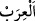

olduğu için “Beyt-i Atîk” diye isimlendirilir. Çünkü hiç kimse onun sâhibi olamaz.
Hecin ise sâdece babası Arap atı olandır.
İlk defa ata binen İsmâil (a.s.)’dır. Bindiği atlar vahşi olduğu için onlara “__WORD__(kısrak)” denirdi. Bir hadiste: “Atlara binin. Çünkü onlar babanız İsmâil’in
mirasıdır.”[116] buyrulmuştur. Atların, İsmâil (a.s.)’a nasıl boyun eğdikleri, Bakara
sûresinin 127. âyetinin tefsirinde anlatılmıştı.
Enes (r.a.)’den rivâyet olunur ki Hz. Peygamber (s.a.) için kadınlardan sonra en
sevimli şey atlardı. Bir hadiste şöyle buyrulmuştur: “Zülkarneyn, karanlığın içinden
hayat pınarına (âb-ı hayat) gitmek istediğinde, gece en iyi gören hayvanın hangisi
olduğunu sordu. Ona “Attır” dediler. “Atların hangisi daha iyi görür?” diye sordu.
“Dişileri” dediler. “Dişilerinden hangisi?” diye sordu. “doğurmamış gençleri”
dediler. Bunun üzerine Zülkarneyn askerlerinde böyle olan altı bin at topladı.”
Hz. Peygamber (s.a.)’in yedi atı vardı. Birincisine, şiddetli koştuğu için, suyun
dökülmesine benzetilerek ‘Sekb’; ikincisine, güzel kişnediği için, güzel kasîde söyleyen
anlamında ‘Mürteciz’; üçüncüsüne kuyruğu yeri örten anlamında ‘Lehîf ’ veya ‘Lühayf ’;
dördüncüsüne, arzu edilen yere sür’atle kavuşturduğu için yapıştıran, birleştiren
anlamında ‘Lezzaz’; beşincisine, kumral ve doru arası bir rengi olduğu için açık doru
renkli anlamında ‘Verd’; altıncısına, soylu at anlamında ‘Tırf ’ ve yedincisine, sürati
sebebiyle ‘Sebha’ adı verilmişti.
Bir hadiste şöyle buyrulur: “Hiçbir gece yoktur ki, at kalkıp da: “Rabbim sen beni
Âdemoğlu’nun emrine, rızkımı da onun eline verdin. Allah’ım beni, onun âilesinden
ve çocuklarından daha sevimli kıl” diye duâ etmesin.”[117]
İbn Abbas (r.anhümâ)’dan rivâyete göre iki ordu karşılaştığı zaman atlar, “Ey
meleklerin ve Cibrîl’in Rabbi, bütün noksanlıklardan ve kötülüklerden münezzeh olan
Rabbim.” duâsını okuyarak Allah’a ilticâda bulunurlar. Bu yüzden ‘Öyle hayvanlar
vardır ki sâhiplerinden daha hayırlıdır.’ denilmiştir. Atlar için ganîmetten iki pay vardır.
Peygamber (s.a.)’in: “Ancak bir at için verilir.”[118] dediği rivâyet edilmiştir. Bu at
Arap atı olsun başka cins olsun fark etmez. Çünkü Allah Teâlâ: “Onlara (düşmanlara)
karşı gücünüz yettiği kadar kuvvet ve cihad için bağlanıp beslenen atlar
hazırlayın.” (el-Enfal, 8/60) buyurmuş ve Arap atı ve diğerlerini birbirinden
ayırmamıştır.
Hâfız Şerefüddin Dimyatî Kitâbü’l-Hayl’de der ki: Atik at bağlı olan eve şeytan
girmez. Uğursuz ata ise gazâlarda binilmez, hayırlı işlerde kullanılmaz ve sâlihler ona
binmez.
Bir hadiste şöyle buyrulmuştur: “Kim atı için arpa ayıklar, sonra getirip onu
boynuna asarsa, Allah Teâlâ her bir arpa karşılığında ona bir iyilik yazar.”[119]
Mûsâ (a.s.), Hızır (a.s.)’a: “Hangi hayvanlar sana daha sevimlidir?” diye sordu. O da
şöyle cevap verdi: “At, merkep ve deve. Çünkü at büyük peygamberlerin, deve Hûd,
Salih, Şuayb ve Muhammed (a.s.)’ın, merkep ise Îsâ ve Uzeyr (a.s.)’ın bineğidir. Ben,